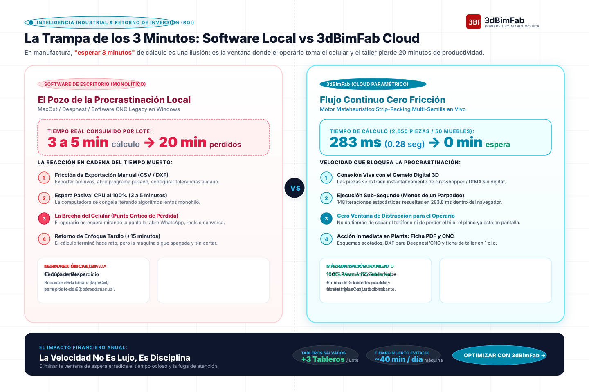

Formato vectorial SVG nativo (1440 × 960 px) • Listo para Inkscape, LinkedIn y Pitch Decks

Nadie se queda 3 minutos mirando una barra de progreso estática. El operario saca su teléfono, se distrae y cuando vuelve a la máquina, se perdieron 15 o 20 minutos de corte real.
Al ser sub-segundo (0.28s para 2,650 piezas), el operario no tiene tiempo ni de soltar la cinta métrica o el tablero. El flujo de trabajo no se rompe jamás.
12.9% de merma frente al 16.5% de los programas de escritorio, más la recuperación de hasta 16 horas mensuales de máquina operando.